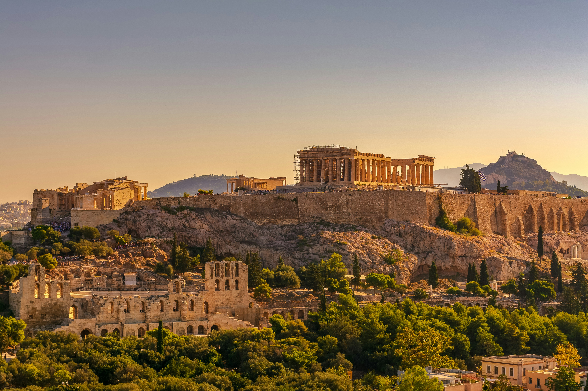
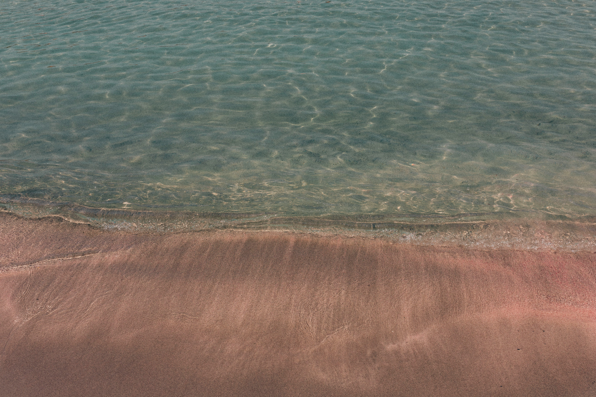
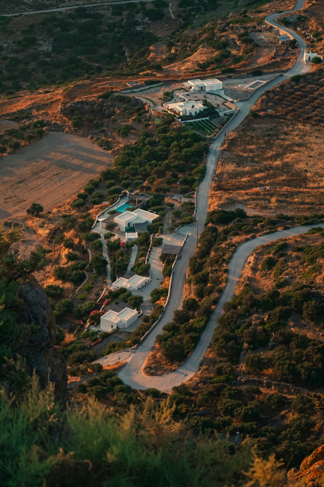

Visit the Acropolis to see the most famous ancient Greek monuments
The Parthenon is the best and most iconic temple, symbolizing the glory of ancient Greece.

Visit Elafonissi Beach for its pink sand, crystal-clear turquoise water, and relaxing natural beauty.
The pink sand beach and shallow lagoon are the highlights, perfect for swimming and photography.

Visit Plaka to explore its charming streets, traditional Greek atmosphere, and local shops and cafés
The picturesque alleys and beautiful views of the Acropolis make Plaka the best place to experience old Athens.